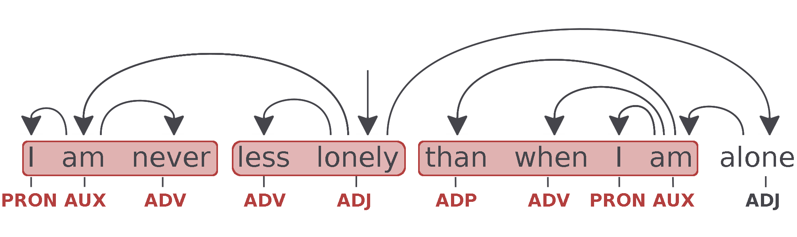
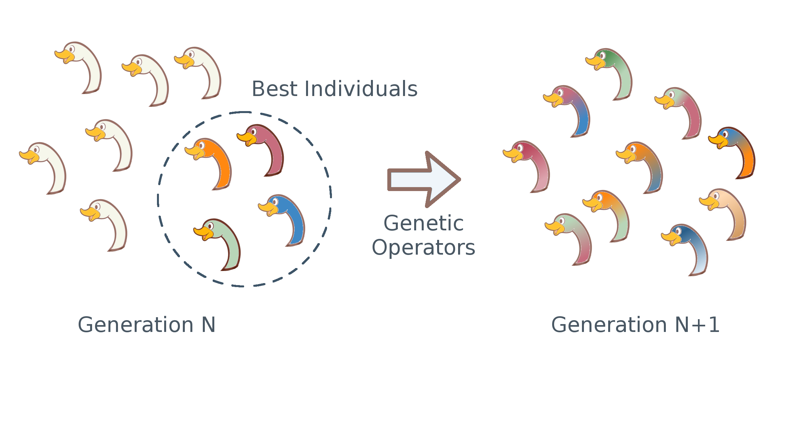
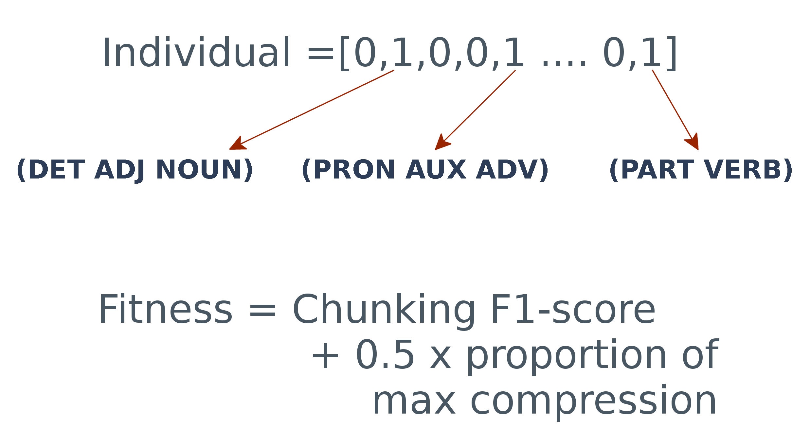
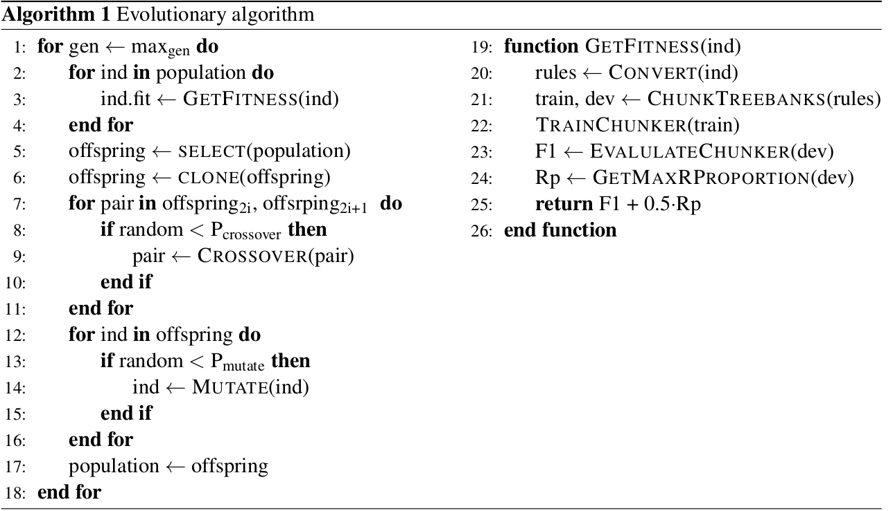
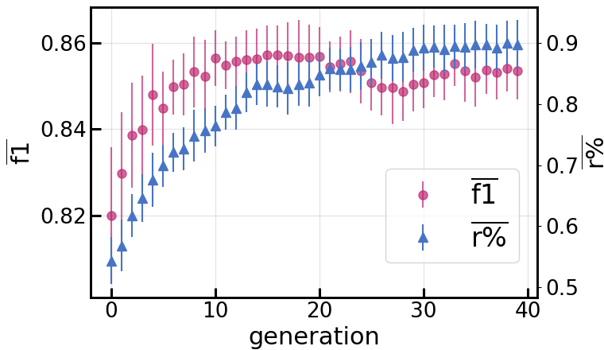
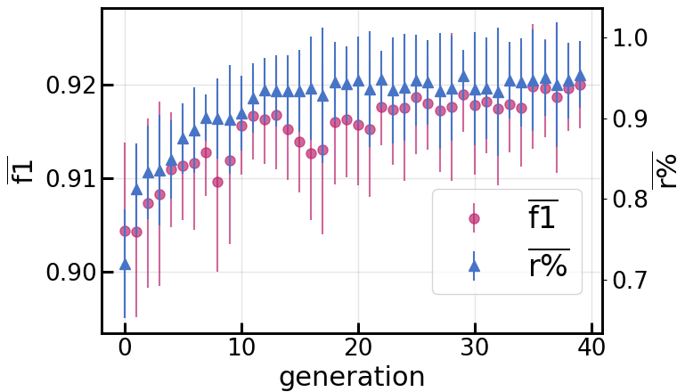
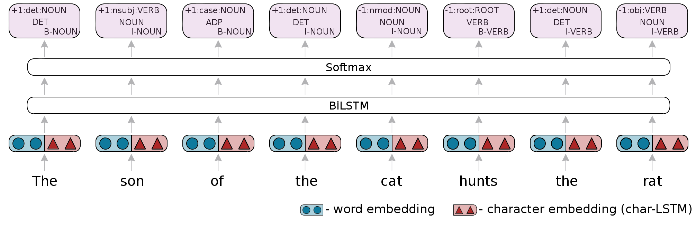
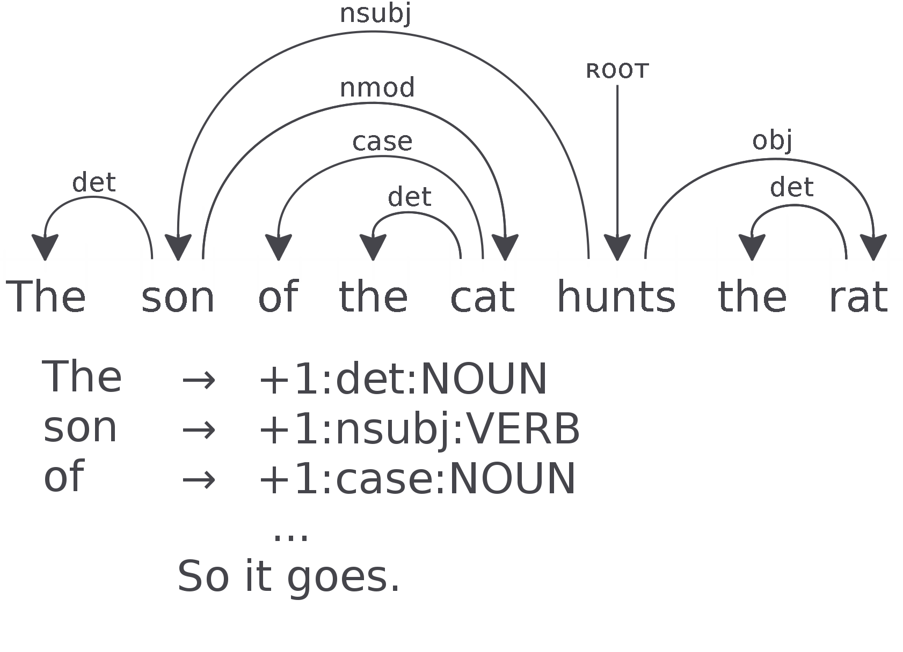
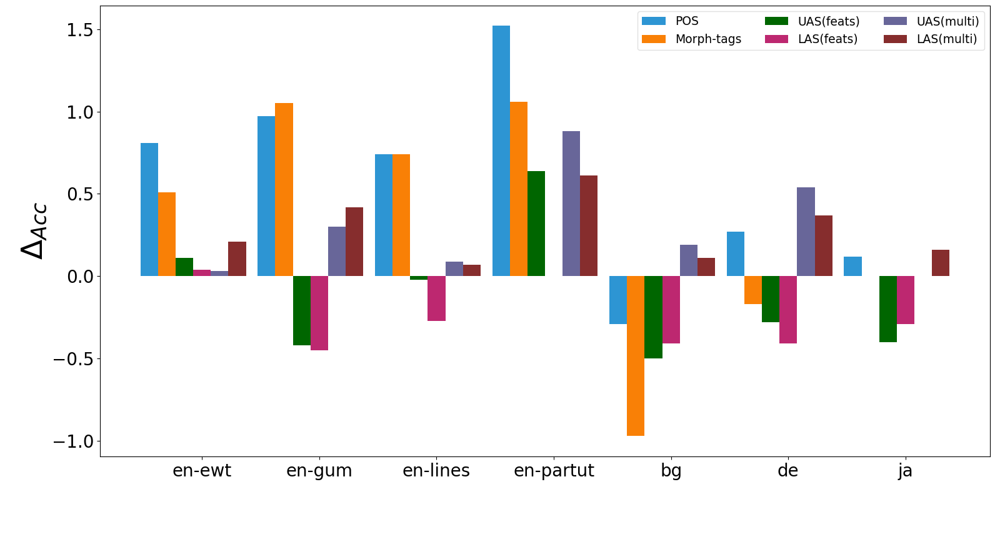

Artificially Evolved Chunks for Morphosyntactic Analysis
Mark Anderson, David Vilares, and Carlos Gómez-Rodríguez
Why chunk?
Chunking can help constituency parsing (Ciravegna and Lavelli, 1999; Tsuruoka and Tsujii, 2005).
It can also be beneficial for dependency parsing (Attardi and Dell'Orletta, 2008; Tammewaret et al., 2015).
And for UD parsing and POS tagging for English treebanks (Lacroix, 2018).
Psycholinguistic grounds for considering chunking (Christiansen and Chater, 2016).
Chunks
Evolutionary Search
Experiments
Chunk candidate criteria:
1. The components are syntactically linked
2. There is only one level of dependency (one head and its dependents)
3. The components are continuous.
4. No dependents within a chunk has a dependent outwith the chunk.
Extracting rules.

Extracting rules.
Chunking
A sequence labelling task.
Each word is labelled, B, I, or O.
B
A token that begins a chunk.
Suffixed with chunk phrase type.
E.g. B-NP for a noun phrase.
I
A token inside of a chunk.
Also suffixed with chunk phrase type.
E.g. I-VP for a verb phrase.
O
Anything outside of a chunk.
Extract 2615 unique rules from UD English EWT treebank v2.3
512 occur more than 5 times.
1.34x10154 different rule sets.
Evolutionary Search

Binary Representation of Rule-sets

Compression, r:
r = #tokens⁄(#chunks + #tokensout)
r% = (rsubset -1)⁄(rall-1)

English-EWT

Japanese-GSD

Network Details
We use the neural sequence toolkit NCRF++ developed by Yang and Zhang, 2018.

Experiment 1
Details of Experiment 1
Multi-task Tagging
Use a combination of POS tagging, morphological-feature tagging, and chunking.
Baselines
Compare against UDPipe 2.0 models and against the NCRF++ framework as single-task for each tagging task.
Results of Experiment 1
English Treebanks
ewt
gum
lines
partut
pos
feats
pos
feats
pos
feats
pos
feats
udpipe
94.44
95.37
93.88
94.21
94.73
94.83
94.10
94.01
single
95.08
96.09
94.61
94.92
95.64
95.57
94.69
94.54
pos+feats
95.23
96.21
94.60
95.26
95.59
95.71
94.63
94.16
pos+feats+chunks75
95.89
96.72
95.58
96.31
96.38
96.45
96.04
95.60
pos+feats+chunks95
95.86
96.52
95.52
96.21
96.35
96.33
96.21
95.60
Results of Experiment 1
Bulgarian (BG), German (DE), and Japanese (JA)
bg
de
ja
pos
feats
pos
feats
pos
feats
udpipe
97.78
95.55
92.03
70.18
96.39
-
single
97.41
95.06
93.07
87.14
96.97
-
pos+feats
97.69
94.84
92.90
87.28
-
-
pos+feats+chunks75
97.49
94.58
93.34
87.03
96.98
-
pos+feats+chunks95
97.44
94.45
92.90
87.11
97.09
-
Results of Experiment 1
Chunking
baseline (single)
multi (with pos + feats)
75%
95%
75%
95%
en-ewt
89.99
91.59
91.84
92.98
en-gum
85.76
88.11
88.08
89.98
en-lines
86.01
88.38
88.45
90.67
en-partut
88.36
90.78
91.79
93.30
bg
92.27
92.60
93.79
94.45
de
88.74
88.97
89.35
89.62
ja
93.35
92.73
94.39
94.02
Experiment 2
Details of Experiment 2
Feature Ablation for Sequence-labelleling Parsing
Use a combination of POS tags, morphological-feature tags, and chunks as predicted from the best performing pos-feats-chunk model from experiment 1 as input features.
Baselines
First uses no features but uses UDPipe predicted POS tags to decode sequence-labelling parsing encoding. Compare against UDPipe 2.0 models and against the NCRF++ framework as single-task for each tagging task.
Second baseline uses UDPipe predicted POS tags as input.
Dependency Parsing as Sequence Labelling

Results of Experiment 2
English Treebanks
ewt
gum
lines
partut
uas
las
uas
las
uas
las
uas
las
no featureudpipe
80.97
77.87
76.70
72.71
76.43
71.87
81.63
78.67
posudpipe
84.88
81.79
81.09
76.87
79.06
74.08
84.01
80.63
pos
86.15
83.29
83.03
79.31
80.76
76.12
85.83
82.69
pos+feats
86.32
83.37
82.83
79.13
81.15
76.48
86.71
83.60
pos-chunks75
85.84
82.87
82.49
78.83
80.86
76.04
87.03
83.86
pos-chunks95
85.80
82.86
81.95
78.19
80.32
75.55
86.65
83.86
pos-feats-chunks75
86.43
83.41
82.61
78.86
81.13
76.21
87.09
83.86
pos-feats-chunks95
85.99
83.04
82.15
78.50
80.82
76.09
87.35
84.04
Results of Experiment 2
Bulgarian (BG), German (DE), and Japanese (JA)
bg
de
ja
uas
las
uas
las
uas
las
no featuresudpipe
86.49
82.43
63.20
58.86
89.96
88.43
posudpipe
89.48
85.30
79.39
74.04
92.49
90.42
pos
89.47
85.11
81.77
76.69
93.68
91.70
pos-feats
89.74
85.48
82.05
77.12
-
-
pos+chunks75
89.23
84.67
81.49
76.54
93.28
91.41
pos+chunks95
89.06
84.77
81.55
76.40
92.95
91.20
pos+feats+chunks75
89.11
84.83
81.77
76.71
-
-
pos+feats+chunks95
89.24
85.07
81.41
76.38
-
-
Experiment 3
Details of Experiment 3
Multi-task Framework for Sequence-labelling Parsing
Use a combination of POS tags, morphological-feature tags, and chunks as auxillary task for sequence-labelling persing.
Weighted as 1x parsing, 0.5x POS tagging (as needed for decoding), 0.25x morphological-feature tagging, and 0.25x chunking.
Baselines
First is dependency parsing as a single task while using UDPipe predicted POS tags to decode.
POS tagging alone and POS tagging with morphological-feature tagging.
Results of Experiment 3
English Treebanks
ewt
gum
lines
partut
uas
las
uas
las
uas
las
uas
las
singleudpipe
80.97
77.87
76.70
72.71
76.43
71.87
81.63
78.67
pos
84.52
81.30
78.94
74.96
78.75
74.13
83.66
80.25
pos+feats
84.21
81.14
79.51
75.42
78.56
73.87
84.10
81.31
pos-chunks75
84.55
81.51
79.54
75.48
78.17
73.55
83.86
81.13
pos-chunks95
84.42
81.34
79.60
75.54
78.72
74.20
83.57
80.16
pos-feats-chunks75
84.25
81.24
79.81
75.84
78.75
73.95
84.01
80.90
pos-feats-chunks95
84.24
81.18
79.48
75.36
78.84
74.15
84.98
81.92
Results of Experiment 3
Bulgarian (BG), German (DE), and Japanese (JA)
bg
de
ja
uas
las
uas
las
uas
las
singleudpipe
86.49
82.43
63.20
58.86
89.96
88.43
pos
88.00
83.89
80.75
75.59
93.25
91.45
pos-feats
88.07
83.89
75.50
-
-
pos+chunks75
87.90
83.66
81.29
75.96
93.25
91.61
pos+chunks95
88.07
83.93
80.98
75.71
93.04
91.28
pos+feats+chunks75
88.26
84.00
80.77
75.52
-
-
pos+feats+chunks95
88.09
83.67
80.69
75.63
-
-
Accuracy Differences

Concluding Remarks.
Automatically extracted chunks can be leveraged.
Results show they are especially useful when used in a multi-task framework for POS tagging, morphological-feature tagging, and sequence-labelling parsing.
Evolutionary search can be further fine-tuned.
Run parallel to lower running time.
Use adaptive parameters.
Shallow syntactic information can be useful
Raises questions about the interplay between different levels of syntactic abstraction.
And whether the efficacy of chunks are dependent on linguistic features of a given language.
Acknowledgements
Work completed under the supervision of Carlos Goméz-Rodríguez and in collaboration with David Vilares.
This work has received funding from the European Research Council (ERC), under the European
Union’s Horizon 2020 research and innovation programme (FASTPARSE, grant agreement No 714150).
Bibliography
Ciravegna, F., Lavelli, A. (1999). Full text parsing using cascades of rules: an information extraction perspective. In Ninth Conference of the European Chapter of the Association for Computational Linguistics
Tsuruoka, Y., Tsujii, J. (2005). Chunk parsing revisited. In Proceedings of the Ninth International Workshop on Parsing Technology (pp. 133–140)
Attardi, G., Dell'Orletta, F. (2008). Chunking and dependency parsing. In Proceedings of LREC Workshop on Partial Parsing: Between Chunking and Deep Parsing
Tammewar, A. Singla, K. Agrawal, B. Bhat, R. Sharma, D. M. (2015). Can distributed word embeddings be an alternative to costly linguistic features: A study on parsing hindi. In Proceedings of the 6th Workshop on Statistical Parsing of Morphologically Rich Languages
Lacroix, O. (2018). Investigating NP-Chunking with Universal Dependencies for English. In Proceedings of the Second Workshop on Universal Dependencies (pp 85–90)
Christiansen, M. H., & Chater, N. (2016). The Now-or-Never bottleneck: A fundamental constraint on language. Behavioral and Brain Sciences, 39.